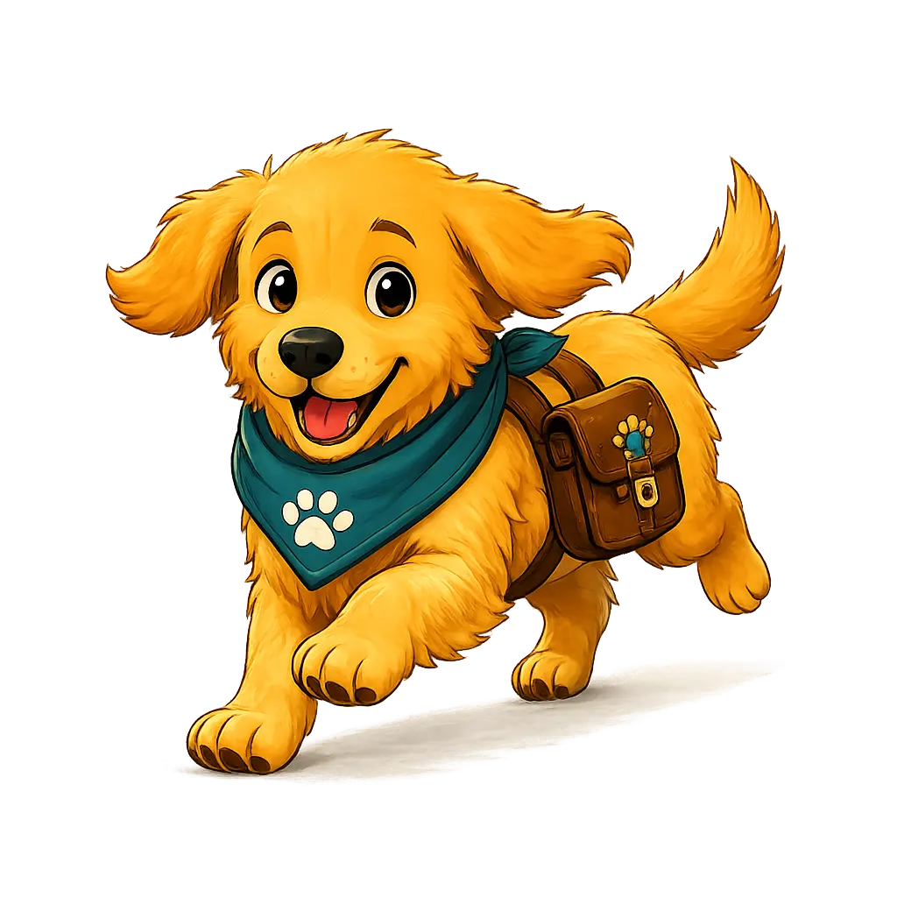
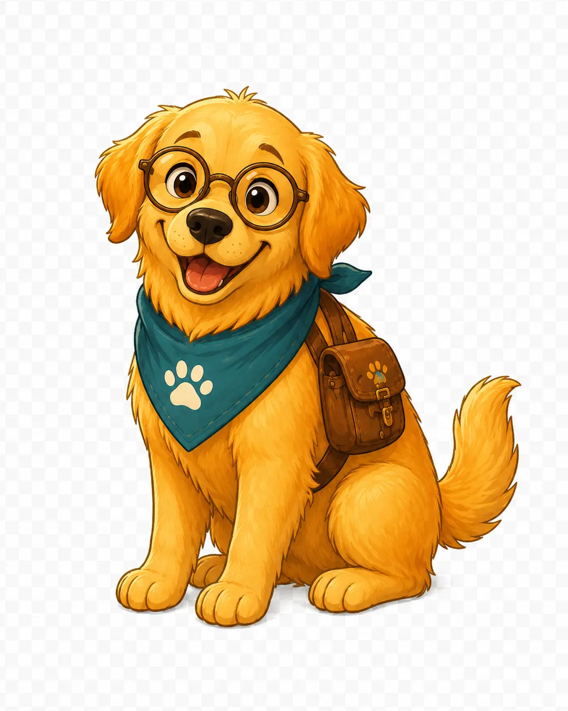

Salut ! Moi, c’est Billig.
Tu viens résoudre le mystère du Conquet avec moi ?
Tu viens résoudre le mystère du Conquet avec moi ?

Pr Cécile, médecin biologiste,
vous êtes réputé pour avoir résolu
de nombreux mystères à travers la France.
Vous recevez un courrier du maire
d’un petit village breton situé
à la pointe de la Bretagne.

Le 7 mai 1874
Cher Professeur Cécile,
Quelque chose d'étrange se passe dans notre village.
Depuis quelque temps, les habitants se mettent très vite en colère et se disputent pour un rien...
Les médecins ne savent pas pourquoi.
L'un pense qu'un virus est responsable. L'autre croit que les habitants ont peut-être été empoisonnés.
Nous avons besoin de votre aide pour découvrir ce qui leur arrive.
Venez vite au Conquet avant que toutes ces disputes ne deviennent encore plus graves !
Nous comptons sur vous.
Le maire du Conquet
Cher Professeur Cécile,
Quelque chose d'étrange se passe dans notre village.
Depuis quelque temps, les habitants se mettent très vite en colère et se disputent pour un rien...
Les médecins ne savent pas pourquoi.
L'un pense qu'un virus est responsable. L'autre croit que les habitants ont peut-être été empoisonnés.
Nous avons besoin de votre aide pour découvrir ce qui leur arrive.
Venez vite au Conquet avant que toutes ces disputes ne deviennent encore plus graves !
Nous comptons sur vous.
Le maire du Conquet

Le maire vous attend
à votre arrivée au Conquet.
Y êtes-vous ?

Pr Cécile, je suis ravi de vous accueillir.
Degemer mat ar Konk Leon
(Bienvenue au Conquet)
malgré les circonstances...
Je vous propose de m'accompagner
à la mairie.

Pas un jour sans bagarre...
Avant, ils ne se battaient que le samedi soir contre les Plougonvelinois!
Demain, c'est mardi, jour de marché.
Allez-y...
Vous verrez par vous-même.

Le préfet est inquiet de la situation...
Je vous remets une habilitation.
Attention: vous ne pouvez pas entrer
dans les propriétés privées.

Bonjour Professeur,
Monsieur le Maire vous a réservé une chambre.
Qui souhaitez-vous interroger ?
Le médecin a son cabinet à son domicile, au port.
Passez par la rampe Lombard, surnommée "Le casse-cou"
(elle est très en pente).
Le bistrot et le restaurant ne sont pas encore ouverts, revenez plus tard.

Vous croyez que je vais faire votre enquête à votre place?


Bonjour,
Si vous cherchez le docteur, il n'est pas encore là...
je l'attends aussi.
Ici, tout le monde m'appelle Kanevedenn (Arc-en-ciel).
Je suis un ancien pêcheur, ma famille est originaire d'ici.
Contrairement à la plupart des pêcheurs du Conquet.

Beaucoup de Paimpolais sont venus s'installer ici,
il n'y avait plus beaucoup de poissons dans le nord de la Bretagne...
Ils appellent ça la surpêche!

Les Conquetois sont d'excellents marins qui sont souvent recrutés pour Le Roy.
Il faut dire qu'ici, on a été marqué par les invasions,
surtout celle de 1558: les Anglais et les Flamands ont tout détruit...
Il y a pire, comme salle d'attente de médecin!
On voit passer les bateaux de pêche, et les bateaux de goémon.
Le goémon est récolté près des îles de Beniguet et de Quéménes,
et transformé en iode à l'usine, un peu plus loin dans la ria.
- Tiens, voilà le Docteur! -

vous êtes Professeur Cécile, l'enquêteur?
je suis désolé de me présenter avec un oeil au beurre noir...

Je suis atteint du même mal que les habitants...
Hier, au lieu de soigner mon patient, je me suis battu!
ce n'est pas digne d'un médecin.
Aidez-nous, professeur, avant que cela finisse mal...
Je suis le seul du village à ne pas avoir cette maladie!
Je ne pourrai pas vous aider...
J'envisage même d'arrêter d'être médecin.
Allez voir le druide, il vous sera peut-être plus utile que moi.

A cette heure-ci,
il est très probablement au lavoir.
C'est juste un peu plus loin sur votre droite.
Cliquez sur le bouton si vous êtes au lavoir

J'imagine que vous n'êtes pas venu au lavoir pour laver votre linge...
Allons droit au but!
J'ai consulté les divinités, elles m'ont assuré
que ce n'étaient pas elles qui punissent les Conquetois.
Elles me disent que c'est un des 4 éléments.

Nous nous reverrons, Professeur.
Je vous conseille de rejoindre le bourg par ce ribine (petit chemin en breton).


Bonjour Professeur
vous arrivez à point nommé, car je souhaitais m'entretenir avec vous.
Je me nomme François Tissier.
Je suis chimiste, et j'ai mis au point un procédé pour transformer les algues en iode.
Je vend mon iode pour l'industrie pharmaceutique:
la teinture d'iode est un excellent antiseptique.

Je sais que ma fortune dérange...
Mon usine est la première de ce type en France!
Ce ne sont pas mes activités qui nuisent à la santé de la population:
j'ai besoin des Conquetois pour faire fonctionner mon affaire...
Lorsque vous aurez résolu cette enquête, allez donc voir où est mon usine.
Elle se trouve à la sortie du Conquet: il faut prendre la petite route
en face de la caserne des gendarmes.
N'y entrez pas sans autorisation!
Qui souhaitez-vous interroger ?

"Ma patronne n'est pas là!
Elle doit être en train de compter les pièces d'or que son grand-père lui a léguées."
C'était un célèbre marchand qui s'appelait "Changélédix".
On lui aurait donné le Bon-Dieu sans confession, comme sa petite-fille!
Et pourtant, si vous saviez..."

"Vous êtes vraiment incompétent!
retournez enquêter, si vous ne voulez pas que je vous mette une raclée!!!"


Ecoutez bien les témoignages et rejoignez-moi là où le maire vous a accueilli.
 Je vais vous raconter d'où vient mon surnom: Kanevedenn.
Un soir de pleine lune, je rentrais de la pêche, j'ai actionné le bouton de la fontaine, car j'avais soif.
L'eau avait une couleur magnifique, comme un arc en ciel!
J'en ai parlé le lendemain, personne ne m'a cru...
et les gens m'ont surnommé kanevedenn: "arc en ciel" en breton.
Plus jamais je n'ai bu de cette eau!
Je vais vous raconter d'où vient mon surnom: Kanevedenn.
Un soir de pleine lune, je rentrais de la pêche, j'ai actionné le bouton de la fontaine, car j'avais soif.
L'eau avait une couleur magnifique, comme un arc en ciel!
J'en ai parlé le lendemain, personne ne m'a cru...
et les gens m'ont surnommé kanevedenn: "arc en ciel" en breton.
Plus jamais je n'ai bu de cette eau!

Vous avez déduit la même chose que moi!

l'eau est contaminée, et c'est pour cela que les gens sont agressifs.
Suivez-moi, avant que la nuit ne tombe!


ce n'est pas de ma faute...

C'est la cachette de mon grand-père, Changélédix.
Il avait un bateau et était marchand.
Un jour, il a sauvé deux gaulois et leur petit chien
et en échange, ils lui ont donné un chaudron de potion magique.

La potion devait servir à donner de la force aux Conquetois
si les anglais nous envahissaient à nouveau...
Je n'avais pas vu que le chaudron était rouillé!
La potion s'écoule dans le ruisseau qui mène à la fontaine
mais elle ne donne plus de force,
mais elle rend agressif...

Ne sois pas inquiète, tu as gardé le secret pour le bien de tous.
Les Conquetois comprendront.
Je vais m'occuper de ce chaudron, trouve une autre cachette pour ton trésor!

Qu'est-ce qui rend les Conquetois agressifs ?
Mauvaise réponse, cherchez encore...